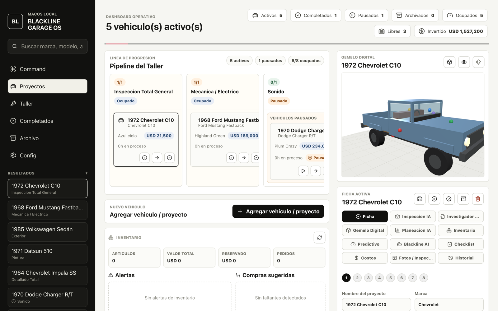
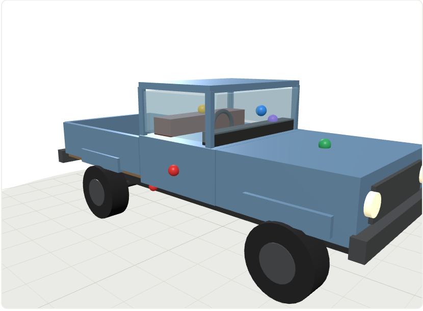

- Tipo
- App de escritorio, macOS
- Stack
- Electron, React, TypeScript, Node.js, SQLite, Three.js
- Código
- blackline-garage-os
Blackline Garage OS
En el taller llevábamos cada restauración entre fotos sueltas, notas y una hoja de cálculo. Blackline junta todo en una sola app: cada vehículo tiene su historial de estados, inventario de piezas, costos y documentación fotográfica.
Incluye un gemelo digital 3D del vehículo y guarda los datos en local, sin depender de internet.

